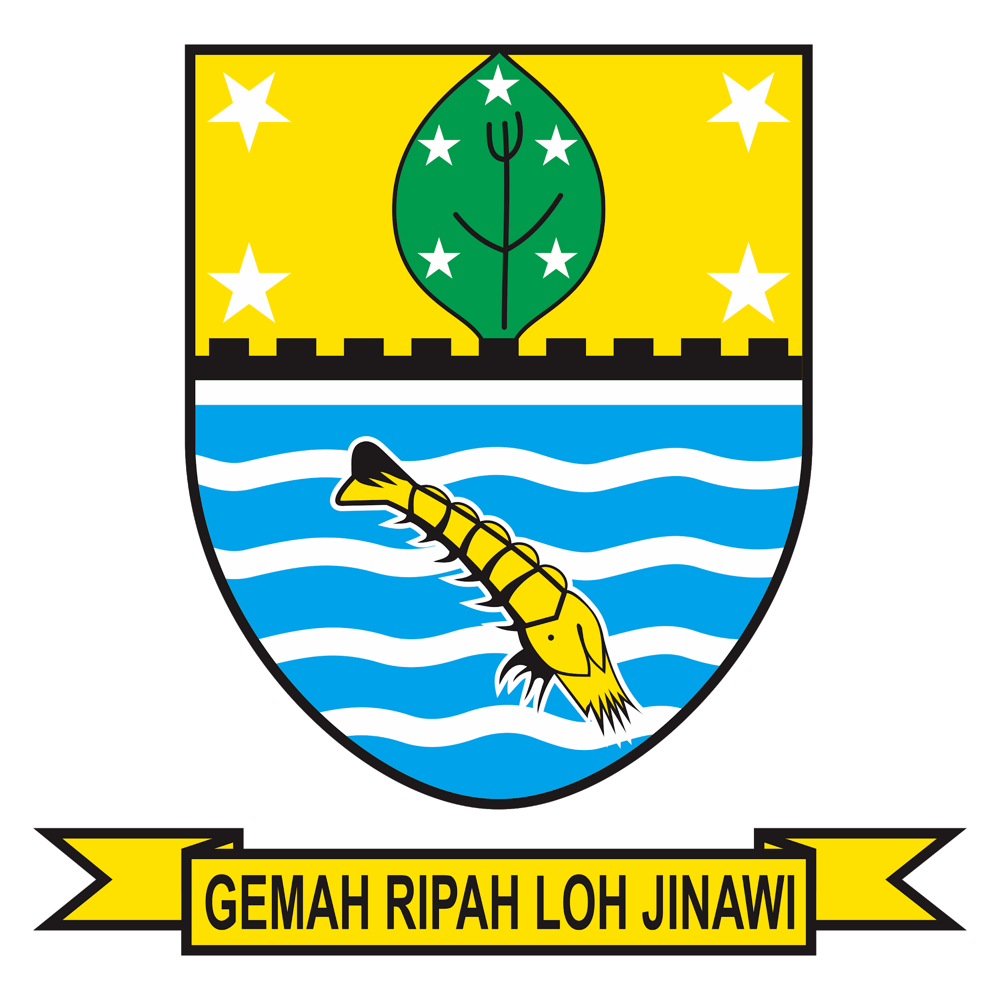

Pendaftaran Administrasi Pemakaman Online
Dinas Perumahan Rakyat dan Kawasan Permukiman Kota Cirebon
UPT Pertamanan dan Pemakaman
Pilih Pelayanan
Permohonan Surat Petak Makam
Perpanjangan Surat Petak Makam
Pemindahan Kerangka Jenazah